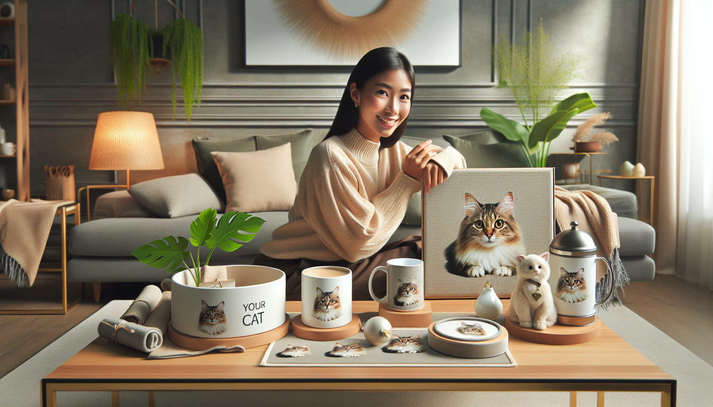

If you have ever shopped for a cat lover, you already know one thing: generic gifts rarely create that wow moment. Cat owners adore products that feel personal, thoughtful, and connected to the pets they treat like family. That is exactly why personalized cat products continue to stand out in the gift market. They are meaningful, memorable, and often practical too.
Whether you are a pet owner looking for something special, a dog lover shopping for a cat-parent friend, or a gift shopper searching for a guaranteed hit, personalized pet gifts offer a winning combination of emotion and usefulness. The best part? Some custom cat products do much more than look cute. They actually sell consistently because they tap into what pet lovers truly want: a way to celebrate their furry companions every day.
In this guide, we are diving into personalized cat products that actually sell, why they perform so well, and which types of items tend to become customer favorites. If you are looking for gift inspiration or trying to understand what makes custom pet products so popular, you are in the right place.
Cats have a special place in the home, and for many people, they are every bit as beloved as any other family member. That emotional bond is what makes personalized cat products so appealing. A custom item featuring a cat’s name, likeness, or unique personality instantly feels more valuable than a mass-produced alternative.
Personalization also makes gift-giving easier. Instead of wondering whether someone will like a generic home accessory or novelty item, shoppers can choose something that reflects the recipient’s actual pet. That extra thoughtfulness makes the gift feel intentional and heartfelt.
There is also a practical reason these products perform well. Many personalized pet items fit naturally into everyday life. People love products they can use regularly, display proudly, or keep as treasured mementos. When a product combines emotional meaning with real-world use, it becomes far more likely to sell.
One of the most reliable categories in personalized pet gifts is the classic cat name product. People love seeing their pet’s name on something beautiful, useful, or fun. It is simple, personal, and instantly recognizable.
Popular options include custom mugs, blankets, tote bags, ornaments, and wall art featuring the cat’s name in stylish fonts or paired with illustrations. These products work especially well because they are easy to personalize while still feeling deeply personal to the buyer.
Cat name blankets are a particularly strong seller because they combine comfort with sentimentality. A cozy blanket featuring a pet’s name can become part of a customer’s daily routine, whether it is draped on the couch or used during quiet evenings at home. Personalized mugs are another favorite because they are affordable, giftable, and easy to use every day.
For sellers and shoppers alike, these products hit a sweet spot: they feel customized without becoming overly complicated. That broad appeal helps explain why custom cat name items continue to perform so consistently.
If you want a personalized cat product that makes a strong emotional impact, photo-based gifts are always a smart choice. There is something irresistible about seeing a favorite cat transformed into wall art, a keepsake ornament, or a printed accessory.
Custom pet portraits are especially effective because they turn a beloved animal into a centerpiece. Whether the style is elegant, playful, modern, or whimsical, portrait-based products have a premium feel that shoppers are often happy to pay more for. They also work beautifully for gift occasions such as birthdays, Mother’s Day, Christmas, and housewarmings.
Some of the most popular portrait-inspired products include:
These products sell because they feel deeply personal and visually striking. They are not just gifts; they are conversation pieces. For pet owners, they can also become treasured reminders of special memories shared with a beloved companion.
Some of the best-selling custom products are not just sentimental. They are useful too. Practicality matters, especially for shoppers who want a gift that will not end up tucked away in a drawer.
Products that blend function and personalization often perform exceptionally well. Think custom feeding mats, cat bowls with names, personalized storage bins for toys, or even home decor pieces that fit seamlessly into everyday routines. Buyers appreciate gifts that are beautiful but also serve a purpose.
A big reason these products sell is that they feel easy to justify. A pet owner may hesitate to buy a purely decorative item for themselves, but a practical personalized product feels like both a treat and a useful purchase. It adds character to the home while supporting day-to-day life with a pet.
Gift shoppers love practical custom cat items too, because they feel thoughtful without being risky. They are more likely to be used regularly, which means the recipient is reminded of the gift again and again.
Holiday shopping is one of the strongest seasons for personalized pet products, and cat-themed gifts are no exception. Shoppers actively look for custom items during Christmas, birthdays, Valentine’s Day, and even pet adoption anniversaries. These occasions naturally increase demand for products that feel personal and celebratory.
Personalized ornaments are among the top-performing holiday items. They are small, affordable, sentimental, and ideal for commemorating a cat’s place in the family. Many buyers purchase a new pet ornament each year, which creates repeat gifting potential.
Other seasonal best-sellers include custom stockings, holiday mugs, festive blankets, and personalized decorations featuring the cat’s name or image. These items perform well because they tie into traditions. Families love including pets in seasonal celebrations, and customized products make that inclusion feel extra special.
For gift shoppers, seasonal items also solve a common problem: finding a present that feels personal without being overly complicated. A custom cat ornament or holiday mug is charming, heartfelt, and easy to order.
One category that consistently resonates with pet owners is memorial and remembrance gifts. While this is a more emotional area, it is also one of the most meaningful. For many cat lovers, personalized memorial products provide comfort and a lasting way to honor a beloved pet.
Memorial frames, ornaments, candles, and keepsake prints are especially popular because they help preserve a cat’s memory in a tangible way. These items often include the pet’s name, dates, or a favorite photo, creating a tribute that feels deeply personal.
What makes these products sell is not trendiness. It is emotional relevance. They meet a real need for comfort, remembrance, and connection. Buyers are often looking for something beautiful and respectful, whether for themselves or as a sympathy gift for someone else.
When designed with warmth and care, memorial cat products can become treasured keepsakes that customers return to again and again in moments of reflection.
Not every custom item becomes a best-seller. The personalized cat products that perform well usually share a few key qualities. First, they are emotionally resonant. They celebrate the bond between pet and owner in a way that feels authentic. Second, they are visually appealing. Shoppers want products that look polished, giftable, and display-worthy. Third, they are easy to personalize. If the customization process feels simple and clear, buyers are more likely to complete the purchase.
Successful products also tend to fit one or more of these categories:
Finally, the best-selling personalized cat products often feel premium without being inaccessible. Shoppers want something special, but they also want value. A well-designed product with thoughtful customization and quality presentation can easily stand out in a crowded market.
When it comes to personalized cat products that actually sell, the winning formula is clear. Buyers want gifts and keepsakes that feel personal, beautiful, and genuinely connected to the pets they love. From custom name mugs and portrait blankets to holiday ornaments and memorial keepsakes, the strongest products are the ones that blend emotion with everyday appeal.
For pet owners, these items are a joyful way to celebrate a beloved cat. For gift shoppers, they are a thoughtful solution that feels far more meaningful than a generic present. And for anyone who has ever wanted to honor the personality, charm, and companionship of a favorite feline, personalized cat products deliver something truly special.
If you are ready to find a gift that cat lovers will actually adore, shop personalized pet products at SnoutAndAbout on Etsy.